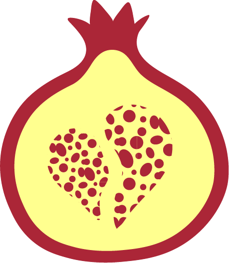

Perda de peso e ganho de massa muscular
Estratégias nutricionais voltadas à perda de peso com equilíbrio, consistência e foco em resultados sustentáveis.
Procuro conduzir a nutrição de forma humana, refinada e personalizada, transformando rotina alimentar em algo sustentável, acolhedor e verdadeiramente alinhado com a vida real.



Nutrição personalizada com sensibilidade, clareza e elegância.
"Procuro uma abordagem que respeite a rotina, contexto e individualidade de cada um, sem extremismos e sem soluções genéricas."
Nutrição - UFRGS
Mestranda em Pediatria e Saúde da Criança - PUCRS
Hospital de Clinicas - POA
Secretaria Estadual de Saúde RS • Política de Alimentação e Nutrição (PAN)
Sou formada em nutrição pela UFRGS e atualmente sou mestranda em Pediatria e Saúde da Criança na PUCRS. Procuro desenvolver com meus pacientes uma abordagem que una embasamento técnico, escuta, aprendizado e atenção genuína às singularidades de cada indivíduo. Após a graduação, inicei os atendimentos nutricionais e venho construindo minha trajetória por meio de experiências em diferentes espaços de formação acadêmica e prática.
Acredito em planos individualizados, ajustados à vida real, à rotina e aos desafios de cada pessoa. Mais do que seguir regras, o foco está em desenvolver hábitos que façam sentido e possam ser mantidos com equilíbrio.
Ler é meu maior hobby, meus autores favoritos são José Saramago, Lygia Fagundes Telles e Fernando Pessoa. Acredito que a nutrição pode ser passada com a mesma beleza poética vista na literatura de cada um dos citados acima. Também gosto muito de cozinhar e explorar gastronomias de diversas culturas.
O acompanhamento é pensado de forma individualizada, respeitando objetivos, rotina, preferências e contexto de vida. A proposta não é oferecer fórmulas prontas, mas construir um contexto alimentar plausível, bem explicado e sustentável ao longo do tempo.
Estratégias nutricionais voltadas à perda de peso com equilíbrio, consistência e foco em resultados sustentáveis.
Construção de hábitos mais conscientes e duradouros, sem rigidez excessiva e com atenção à vida real.
Hábitos alimentares focados na melhora de resultados laboratoriais e diminuição de sinais e sintomas de doenças.
Organização prática da alimentação com orientações claras, adaptadas à rotina, preferências e necessidades de cada paciente.
Suporte contínuo para ajustes de estratégia, evolução do plano e manutenção de resultados com mais segurança.
Condutas pensadas para diferentes metas, com abordagem personalizada e alinhada à individualidade de cada paciente.
Além da consulta online, o acompanhamento inclui materiais organizados para facilitar a compreensão e tornar a aplicação do plano mais simples no dia a dia.
Mais informaçõesConsulta online com atendimento individualizado
Plano alimentar entregue em formato de apresentação, com explicações mais visuais e acessíveis
Receitas utilizadas no plano com modo de preparo organizado para facilitar a rotina
E-book complementar com orientações, dicas e conteúdos de apoio
Ajustes complementares ao longo do processo nutricional
Cada acompanhamento é construído com carinho, e todos partem do mesmo compromisso: tornar a nutrição mais clara, possível e sustentável no dia a dia de cada um.